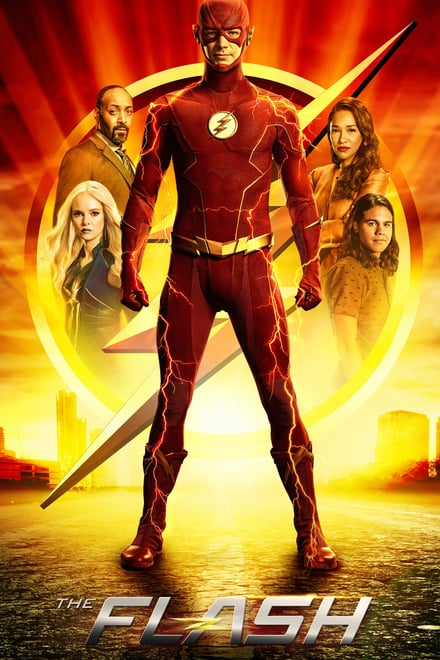

Eu Sou a Lenda (2007)
Sinopse
Robert Neville é um brilhante cientista e o único sobrevivente de uma epidemia que transformou os humanos em mutantes sedentos por sangue. Andando pela cidade de Nova York, ele procura por outros possíveis sobreviventes e tenta achar a cura da praga usando seu próprio sangue, que é imune.
Filmes Populares


Séries


